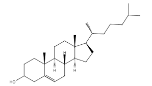
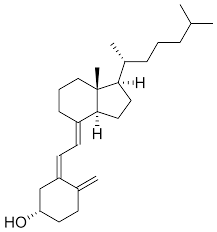
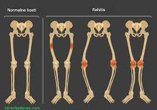

Steroidni hormoni OVDE
Zucne kiseline OVDE
Vitamini OVDE
Steroidi predstavljaju veoma znacajnu grupu lipida jer u organizmima imaju niz raznovrsnih funkcija.
Prema strukturi steroidi se dele na:
Iako raznovrsne gradje, svi do sada poznati steroidi se mogu izvesti iz osnovnog jedinjenja, sterana, ciklicnog ugljovodonika, koji sadrzi tri sestoclana i jedan petoclani prsten.
-struktura sterana
Steroli su jedinjenja koja sadrze jednu ili vise OH-grupa vezanih za steranski skelet, kao i alifaticni bocni niz na C-17 atomu koji ima osam ili vise C-atoma.Prema poreklu dele se na zoosterole (nalaze se u zivotinjama), fitosterole (biljni steroli) i mikosterole (steroli gljiva i kvasca).
Najznacajniji zoosterol je holesterol. U njegovoj strukturi karakteristicno je prisustvo β-orijentisane (iznad ravni skeleta) hidroksline grupe na C-3 atomu, dvostruke veze izmedju ugljenikovic atoma 5 i 6, kao i iyooktanskog bocnog niza na C-17 atomu. U covekovom organizmu holesterol moze biti slobodan ili esterifikovan masnim kiselinama.
-struktura holesterola
Lanosterol je zoosterol koji predstavlja glavnu komponentu lanolina, masne prevlake ovcije vune. Lanolin je znacajan za primenu u kozmetici. Najrasprostranjeniji fitosterol je β-sitosterol, strukturni analog holesterola sa desetougljenicnim bocnim nizom na C-17 atomu, a najpoznatiji mikosterol je egrosterol koji se nalazi u kvascima.
struktura lanosterola-
Pri izlaganju ergosterola suncevoj svetlosti raskida se C-9 - C-10 veza, pri cemu dobijeni proizvod ima vitaminsko dejstvo i oznacava se kao vitamin D2. Ista hemijska transformacija odigrava se i pri ozracavanju 7-dehidroholesterola, koji se nalazi u ljudskoj kozi. Nastali fotohemijski proizvod je vitamin D3. Vitamini D2i D3, spadaju u grupu vitamina D ili kaliciferola, pa se stoga nazivaju ergokaliciferol, osnosno holekaliciferol.
-struktura kalciferola
Vitamin D igra vaznu ulogu u metabolizmu kalcijuma potpomazuci resorpciju njegovih jona u crevima i
mineralizaciju kostiju. Nedostatak vitamina D (
*Vise o rahitisu procitajte klikom na sliku *